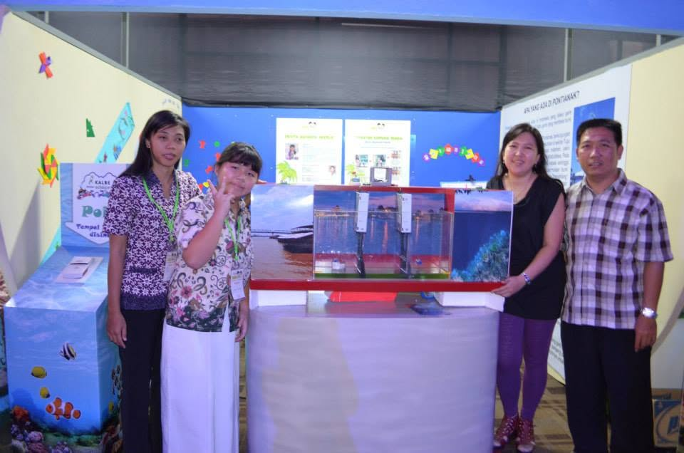
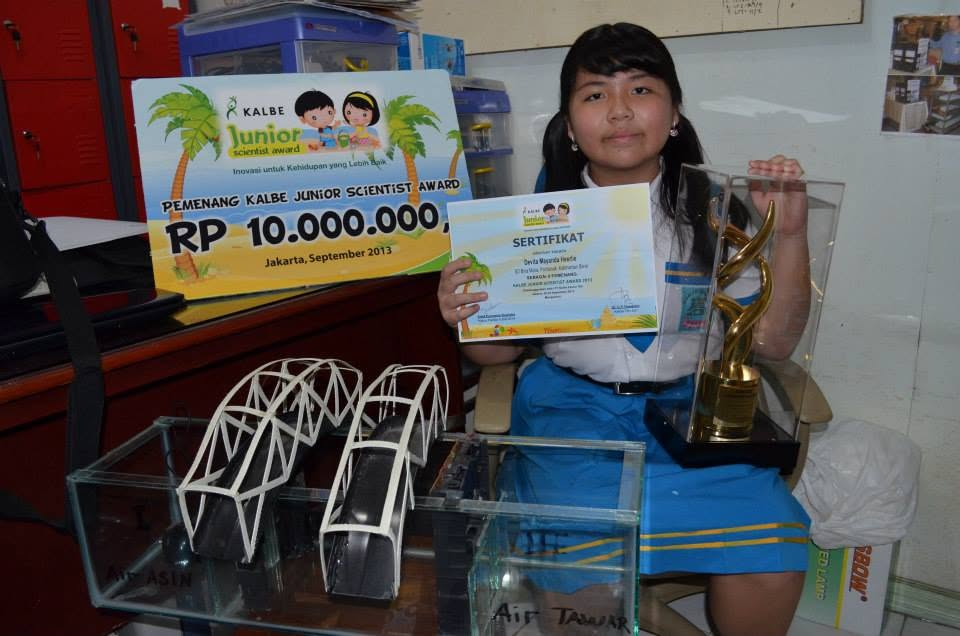

The beginning
The forest fires that bring fog, the smell of smoke, and rising cases of lung disease have been part of life for as long as I can remember. It's become almost an annual event. During the dry season, the peat soil of my island, Kalimantan, becomes fragile and highly prone to fire once it dries out. As the soil dries, fires break out, burning through the forest and the biodiversity within it.
The dry season also brings back another yearly problem: salty water. The Kapuas River — the longest river in Indonesia, running through my city — dries up when the rains stop, allowing seawater to push into the river. This turns the water supplied to homes salty, causing not just inconvenience but real health issues for the people living in my city.
Since I was little, becoming a scientist has always been my dream. That dream led me to join the Kalbe Junior Science Award, where I became a finalist by proposing a solution to the salty water problem: building a "gate" at each bridge crossing the Kapuas River to limit how much seawater could enter. Beyond the encouragement it gave me to pursue science, that competition was one of the first times I was pushed to learn how to properly present my work — a skill I still rely on today, even now in my master's degree.


The problem now
The forest fires in Kalimantan have since spread beyond Indonesia, reaching Malaysia, which shares the same island. This has turned it into not just a biodiversity crisis, but an inter-country issue as well.
Focusing on what I'm studying now in my master's — the ecology behind these wildfires — makes this feel more urgent than ever. I no longer live in Kalimantan, but many of my family and friends still do, which makes this problem personal. Much of Kalimantan's plant biodiversity has already been replaced by palm oil plantations (a story for another blog post), and what remains is now being lost to wildfire. Kalimantan is known as one of the lungs of the world, home to vast numbers of trees that supply oxygen — but these fires are reducing that number fast, and trees that took hundreds of years to grow can disappear in an instant.
The second problem is animal biodiversity. Kalimantan is home to some of the most unique species in the world, like the Bornean orangutan. Even with national parks designed to protect them, many orangutans still live deep in the forest — and when that forest burns, they lose their home. Other animals unique to my home, like the hornbill (burung enggang), are losing their homes too. I've been making paintings about this.
It's not just animals losing their homes — people are too, as this wildfire burns uncontrollably. Because of this, I really hope the government can help resolve this issue (and no, throwing flour at the forest won't put out a fire — we all know that won't work). This wildfire needs to stop. And to everyone I love back in Kalimantan: please stay safe, and stay home. <3
love, Devita!